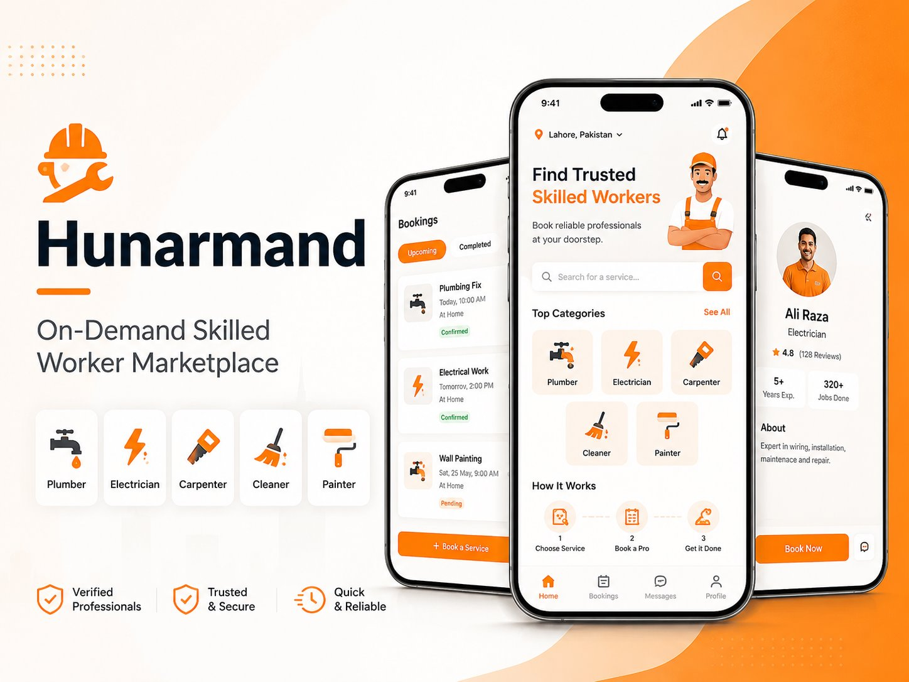
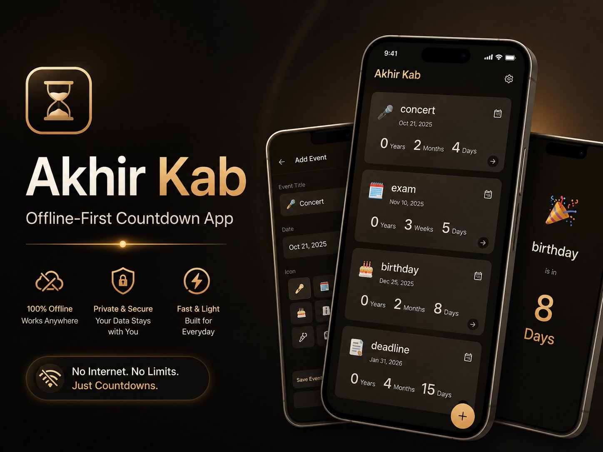
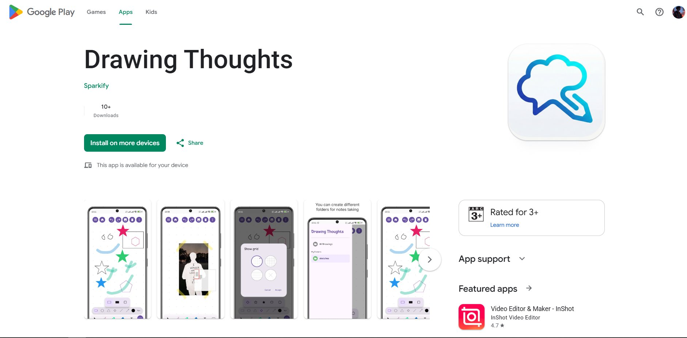
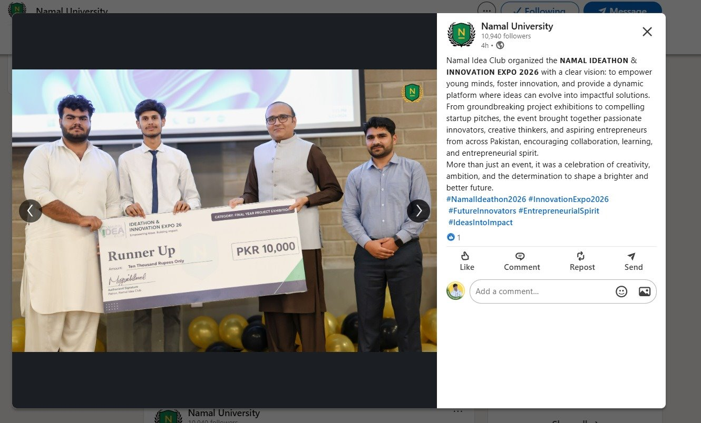
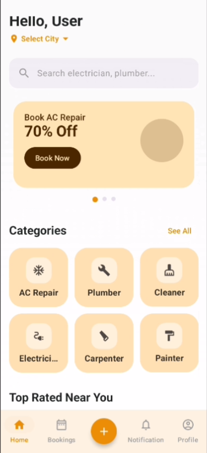
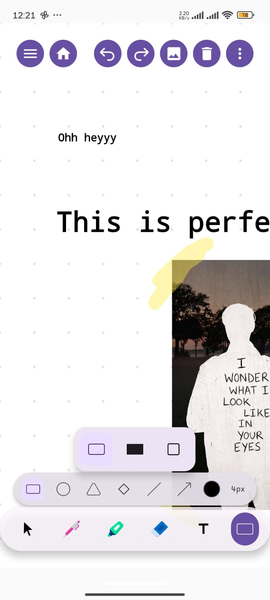

Fix unstable apps
Crash fixes, auth issues, and broken Android flows
Useful when an existing app needs reliable bug fixing instead of a full rebuild.
Android freelance support
Kotlin, Jetpack Compose, Firebase, Supabase, Room DB, REST APIs, Hilt, and Clean Architecture.
I help fix broken Android flows, build Compose UI from Figma or screenshots, and improve data layers in existing apps.
Fix unstable apps
Useful when an existing app needs reliable bug fixing instead of a full rebuild.
Build clearer UI
Focused on practical screen delivery, state handling, and mobile responsiveness.
Improve the data layer
Helpful for apps that need better persistence, sync behavior, or maintainability.
Projects
The strongest selling point is project proof. These are the Android builds most useful for clients and recruiters to review first.

An Android marketplace connecting customers with local skilled workers through cleaner discovery, booking, and service coordination flows.
Problem solved
Made local service booking easier to understand and manage on mobile.
My role
Built Android customer and worker flows, service discovery, job posting, booking lifecycle, and notifications.
Main features
Onboarding, provider profiles, service search, booking states, and job tracking.
Architecture
Jetpack Compose, MVVM, Clean Architecture, and location-aware service matching.

A local-first countdown and age calculator app built to stay useful without internet access or backend dependency.
Problem solved
Delivered a cleaner countdown utility that works fully offline.
My role
Designed and built the Android app, including state handling, persistence, and UI implementation.
Main features
Event countdowns, age calculation, local storage, and predictable Compose state.
Architecture
Jetpack Compose, Room DB, MVI, offline-first data flow, and Clean Architecture.

A cross-platform drawing and note-taking app that shows Android work beyond standard form or CRUD screens.
Problem solved
Built a more complex interaction model for drawing, note-taking, and canvas behavior.
My role
Built the product around Kotlin Multiplatform and Compose, with focus on canvas tools and release readiness.
Main features
Drawing tools, note boards, Android and desktop support, and publishable app structure.
Architecture
Kotlin Multiplatform, Compose UI, shared logic, and Android publishing workflow.
Additional work
Kept lower in the page so the portfolio stays clearly positioned around Android client work.
Secondary build
Productivity and focus tracking app.
Built by me
A secondary build that stays below the main Android portfolio story so it does not dilute the positioning.

Built by me
Privacy-first Android digital wellbeing app using on-device detection and Accessibility Services.
Services
Focused on the Android work that usually starts from a bug list, a feature request, or an app that needs cleanup.
Fix crashes, broken login flows, navigation bugs, database issues, and unstable Android screens.
Build clean Compose screens from Figma, screenshots, or rough requirements with practical mobile layout behavior.
Set up authentication, backend-connected flows, and data handling with clearer Android-side implementation.
Add local persistence, caching, and sync-friendly flows so the app still works when connectivity is unreliable.
Connect Android apps to APIs with structured models, loading states, error handling, and better maintainability.
Clean up messy Android codebases so new features, bug fixes, and onboarding become easier to manage safely.
Help prepare Android apps for stronger release quality, better UI consistency, and a more professional final pass.
Trust
Project proof, public code, and grounded background signals without fake numbers, fake clients, or inflated claims.

Proof spotlight
Namal University's Ideathon & Innovation Expo 2026 provides a real public proof point behind the marketplace project.
View Namal PostDrawing Thoughts includes release proof from Google Play in the project case study.
GitHub profile
@Alyasa62
Clients can review Android, Kotlin, and Compose work directly on GitHub.
Open GitHub ProfileBS Software Engineering, University of Mianwali. Finishing in 2026 while building Android project case studies.
Marketplace, offline-first utility, and cross-platform canvas projects cover different Android implementation needs.
GitHub Proof
A larger screenshot so clients and recruiters can quickly see the account, pinned Android work, and active contribution history.
Profile overview
This screenshot shows the GitHub home screen with pinned repositories like Drawing Thoughts, AkhirKab, and Nupe, plus visible contribution activity.
Open GitHub ProfileSkills
Grouped by the parts of Android work that you usually need built, fixed, or improved.
Native Android UI, screen flows, and production-ready implementation with modern Android tools.
Structured Android code for clearer ownership, safer changes, and better long-term maintainability.
Authentication, local storage, API integration, and sync-friendly Android data flows.
Delivery workflow, source control, and design handoff support for day-to-day Android work.
About
The goal is practical Android work that clients can ship, maintain, and trust in day-to-day use.
I build and fix Android apps using Kotlin, Jetpack Compose, Firebase, Supabase, Room DB, REST APIs, Hilt, MVVM/MVI, Repository Pattern, and Clean Architecture.
My work is strongest when an app already has a real problem to solve: unstable authentication, broken navigation, unfinished UI, poor local storage behavior, or a data layer that needs cleanup.
I'm currently completing my Software Engineering degree at the University of Mianwali while building Android projects around real product flows.
Additional Experience
Included as supporting experience, not the main portfolio story.
Android Developer
Nov 2025 - Present
Contributing to Android RMS features using Kotlin, Jetpack Compose, Room DB, REST APIs, and clean data-layer practices.
Contact
Send the bug, feature request, or UI reference. I'll review the Android scope clearly and suggest the cleanest implementation path.
Primary contact
Best for project discussions, bug reports, feature requests, and recruiter outreach.
Professional profile
Useful for direct client outreach, recruiter review, and professional context.
Code profile
Public Kotlin, Compose, Android, and case-study proof.
Secondary contact
Available if a project discussion needs a faster follow-up after email or LinkedIn.
Case study
On-Demand Skilled Worker Marketplace
Customers needed a practical way to find local skilled workers, compare options, and move from discovery to booking without a confusing service flow.
I handled Android product implementation with a focus on customer and worker flows, service discovery, booking lifecycle screens, and keeping the app structured like a production-ready marketplace build.
Hunarmand was presented as a final year project and earned Runner-Up at Ideathon & Innovation Expo 2026.

Case study
Offline-First Countdown App
Many countdown apps are visually noisy or depend too heavily on connectivity. This project focused on a lighter, local-first Android experience.
I designed and built the Android app, focusing on state-driven Compose UI, local persistence, and predictable countdown logic for everyday use.
The project demonstrates local-first Android architecture, clean state management, and a useful utility flow without server dependency.

Case study
Cross-Platform Infinite Canvas Whiteboard App
Canvas-based note-taking is harder than a standard list or form app because the interaction model, drawing tools, and screen behavior need to remain intuitive across platforms.
I built the product around Kotlin Multiplatform and Compose, focusing on canvas interactions, drawing tools, and a release that could be published publicly.
Drawing Thoughts adds real Android publishing experience to the portfolio and shows work beyond routine CRUD screens.
